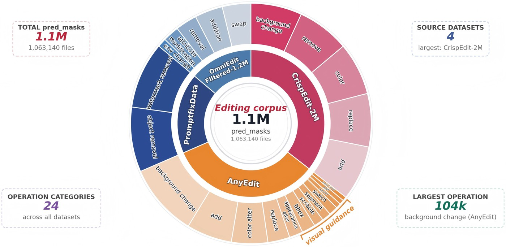

SIGMA masks from the public editing corpora are used to fine-tune CAT-Net, MVSS-Net, PSCC-Net, and TruFor.
Relative to the public weights, average F1 rises by +4.58 to +30.79, and the mean of these four gains is +20.98.
The largest jumps are on MagicBrush: CAT-Net from 5.33 to 61.02 F1, and TruFor from 2.51 to 28.35.
The same supervision also improves DEAL-300K and OpenSDI.
Against the same image pairs annotated by DDPM-CD, SIGMA is stronger for CAT-Net, PSCC-Net, and TruFor. MVSS-Net's average F1 is higher with DDPM-CD masks (44.43 versus 42.69).
| Method |
Weights |
AutoSplice |
CoCoGlide |
DEAL-300K |
MagicBrush |
OpenSDI |
Average |
| F1 | IoU |
F1 | IoU |
F1 | IoU |
F1 | IoU |
F1 | IoU |
F1 | IoU |
| CAT-Net | Public Weight | 41.49 | 31.79 | 40.97 | 33.69 | 12.14 | 8.75 | 5.33 | 3.29 | 7.32 | 5.27 | 21.45 | 16.56 |
| Finetune w/ DDPM-CD | 44.27 | 30.48 | 32.83 | 21.99 | 13.83 | 8.40 | 59.19 | 42.99 | 20.56 | 12.68 | 34.14 | 23.31 |
| Finetune w/ SIGMA | 60.82 | 47.23 | 45.53 | 34.42 | 29.99 | 20.98 | 61.02 | 50.05 | 27.02 | 18.14 | 44.88 | 34.16 |
| MVSS-Net | Public Weight | 18.04 | 12.22 | 32.80 | 25.30 | 5.43 | 3.61 | 1.79 | 1.01 | 1.46 | 0.91 | 11.90 | 8.61 |
| Finetune w/ DDPM-CD | 53.98 | 41.03 | 35.51 | 25.27 | 16.40 | 10.34 | 91.20 | 85.10 | 25.06 | 16.46 | 44.43 | 35.64 |
| Finetune w/ SIGMA | 54.14 | 41.43 | 35.63 | 25.38 | 20.05 | 13.29 | 81.95 | 73.72 | 21.69 | 14.51 | 42.69 | 33.67 |
| PSCC-Net | Public Weight | 56.36 | 43.83 | 50.85 | 40.60 | 20.19 | 13.69 | 14.87 | 9.37 | 14.50 | 9.64 | 31.35 | 23.43 |
| Finetune w/ DDPM-CD | 54.19 | 41.33 | 36.16 | 27.46 | 16.22 | 10.77 | 41.15 | 32.71 | 18.54 | 12.10 | 33.25 | 24.87 |
| Finetune w/ SIGMA | 57.06 | 45.46 | 42.30 | 31.45 | 21.16 | 14.20 | 36.69 | 26.67 | 22.44 | 15.25 | 35.93 | 26.61 |
| TruFor | Public Weight | 32.69 | 25.52 | 28.33 | 24.33 | 9.26 | 6.77 | 2.51 | 1.48 | 6.93 | 5.22 | 15.94 | 12.66 |
| Finetune w/ DDPM-CD | 57.06 | 41.97 | 55.33 | 42.31 | 22.49 | 14.36 | 20.63 | 12.36 | 20.13 | 12.78 | 35.13 | 24.76 |
| Finetune w/ SIGMA | 63.42 | 50.63 | 58.72 | 47.34 | 27.85 | 18.92 | 28.35 | 20.06 | 27.02 | 19.20 | 41.07 | 31.23 |
F1 and IoU (%). Bold marks the best result within each detector. The mean of the four average-F1 gains over public weights is +20.98.

Four public editing corpora, annotated by SIGMA into about 1.1 million pairs and 24 operation types.
The full annotated set is released on Hugging Face at PatrickZZZ/SIGMA.
Two smaller splits of the same annotations are on ModelScope:
10,000 samples (SIGMA_small)
and
100,000 samples (SIGMA_partial).
These annotations are for academic research only. Any use must also follow the license of each source corpus (PromptfixData, AnyEdit, CrispEdit-2M, and OmniEdit-Filtered-1.2M) and cite both that corpus and SIGMA.